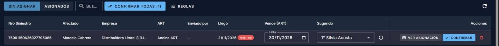

Case study · Dec 2025 – present
BInfo: from an insurer's email to a finished investigation report
Estudio HDB investigates workplace-accident claims for insurance companies (ARTs) in Argentina. Each case used to be assembled by hand: read the assignment email, interview the worker and the employer, write a Word report. BInfo now carries a case from the moment the insurer's email arrives until a supervisor approves the final report.

What happens to a case
- A poller reads the insurers' assignment emails and their PDFs, and creates the case.
- A supervisor assigns it, with a suggested investigator based on workload and rules.
- Interviews are drafted in the app and structured by an LLM (n8n + xAI).
- An assistant flags missing data and contradictions between interviews.
- The report is generated as Word from templates, then reviewed and commented online.
- The final report goes to the client's Drive folder and the insurer's portal.
Decisions I can defend
Never trust an LLM quote
The model returns quotes from the interviews to back each suggestion. Before showing them, the backend checks that every quote actually exists in the source text; a quote that doesn't is downgraded instead of displayed as evidence.
Templates that can't break silently
Word splits text into "runs" when you save, which can cut a template tag in half. That used to surface only when an investigator couldn't generate a report. The test suite now compiles all 29 templates and checks their required tags, so a broken template fails in seconds, before deploy.
Staging that can't touch the real world
The test environment is a copy of production with Google tokens deleted and a test mode that blocks email, the insurer's portal and the LLM. The safety is in configuration, not in remembering not to click the wrong button.
Security for a small team
JWT sessions with per-user revocation, two-factor login by email, login auditing with alerts on suspicious attempts, and encrypted OAuth tokens at rest.
- Vue 3
- Pinia
- Vuetify
- Node.js
- Express
- MySQL
- Sequelize
- n8n
- LLM APIs
- Google APIs
- Server-Sent Events
- docxtemplater
- pdf-lib
- Vitest
- Linux VPS
- nginx
- pm2


The code is private (it belongs to the firm and handles health and personal data), so there is no public repo or live demo. I'm happy to walk through the architecture and code in an interview.
Other work
- Museo Virtual
- University team project (distributed systems): a virtual museum built with Git branches and code review in a group of students.
- Estudio HDB landing
- Company landing page built with Astro.